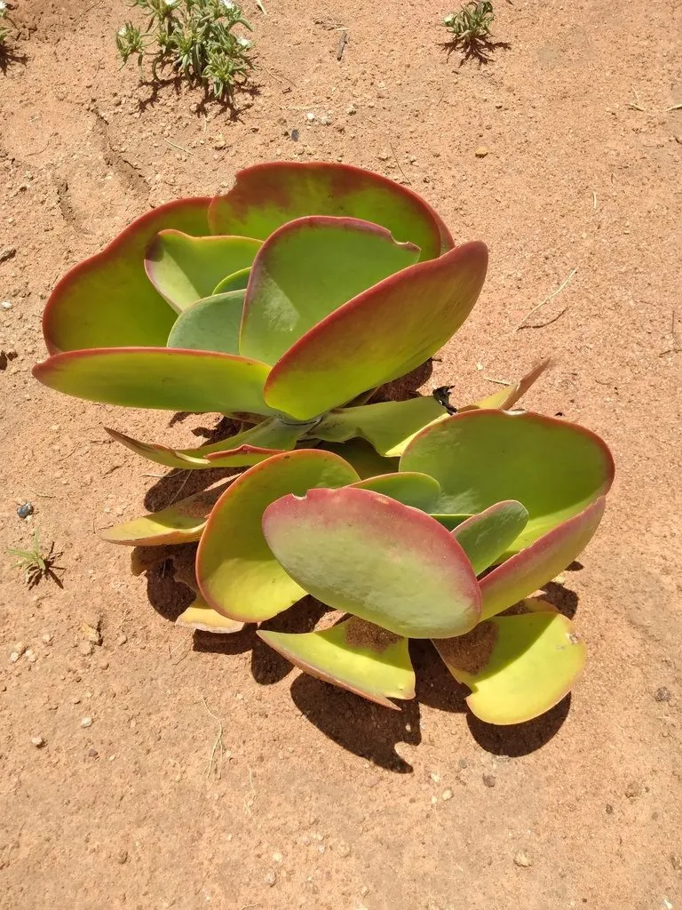

多肉植物 · 植物界
唐印 Kalanchoe luciae

景天科伽蓝菜属多肉，叶片宽大如扇、覆白粉，秋冬叶缘变红，原产南非，是色彩热烈、容易养成老桩的经典多肉。
- 分类
- 门被子植物门纲木兰纲目虎耳草目科景天科属伽蓝菜属
- 栖息环境
- 南非干旱地区的石质坡地与灌丛
- 地理分布
- 原产南非，世界各地盆栽，中国各地常见
- 保护级别
- 暂无评估
物种志
唐印为景天科伽蓝菜属的多年生肉质草本，株高 30–60 厘米，茎粗壮，叶片对生，卵形或倒卵形，长 10–15 厘米，宽 8–12 厘米，叶面灰绿色，覆一层白色蜡粉，叶缘在光照充足和温差大时呈鲜红色。叶片排列成对生的扇形，整体像一把把打开的折扇。花为圆锥花序，花黄色，花期春季；果实为蓇葖果。
唐印原产南非的干旱地区，喜阳光充足、温暖干燥和通风良好的环境，耐旱、怕积水。它叶片宽大、叶缘红艳，秋冬季节整株呈现红绿相间的色彩，十分醒目，是伽蓝菜属中最受欢迎的观叶种类之一。栽培用颗粒土，生长期干透浇透，给予充足光照可使叶缘更红，冬季保持 5℃ 以上；繁殖以叶插和枝插为主，也可分株。
形态与习性
- 株高30–60 厘米
- 叶片卵形或倒卵形，宽 8–12 厘米
- 花期春季，花黄色
- 光照喜充足光照，叶缘更红
- 水分耐旱，干透浇透
- 土壤疏松透气的颗粒土
- 繁殖叶插、枝插、分株
- 特点秋冬叶缘鲜红，容易成老桩
趣味知识
- 唐印的叶片宽大如扇，对生排列，整体像打开的折扇。
- 秋冬低温强光下叶缘变红，是它最抢眼的季节。
- 唐印容易长成老桩，枝头叶片层层叠叠，观赏性强。